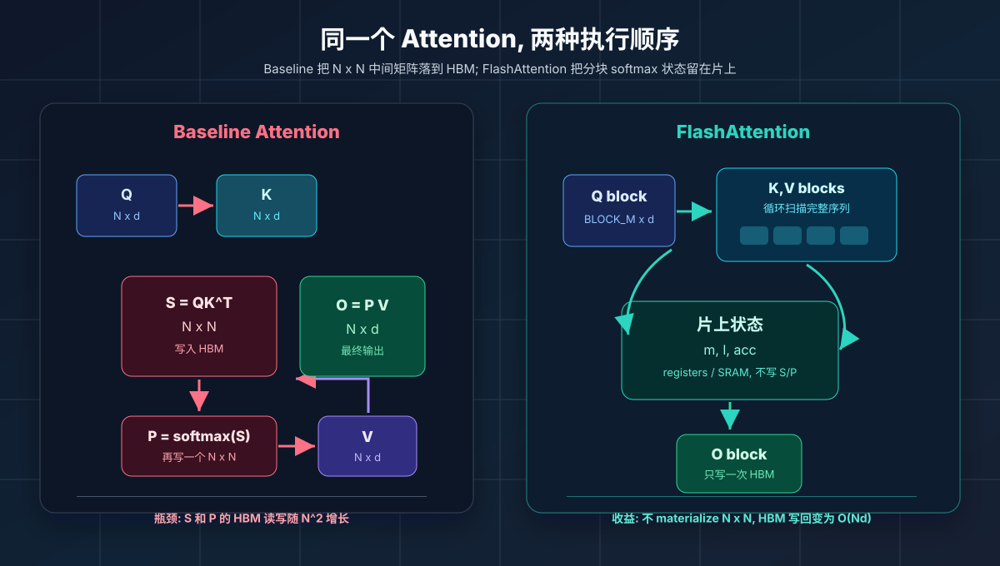
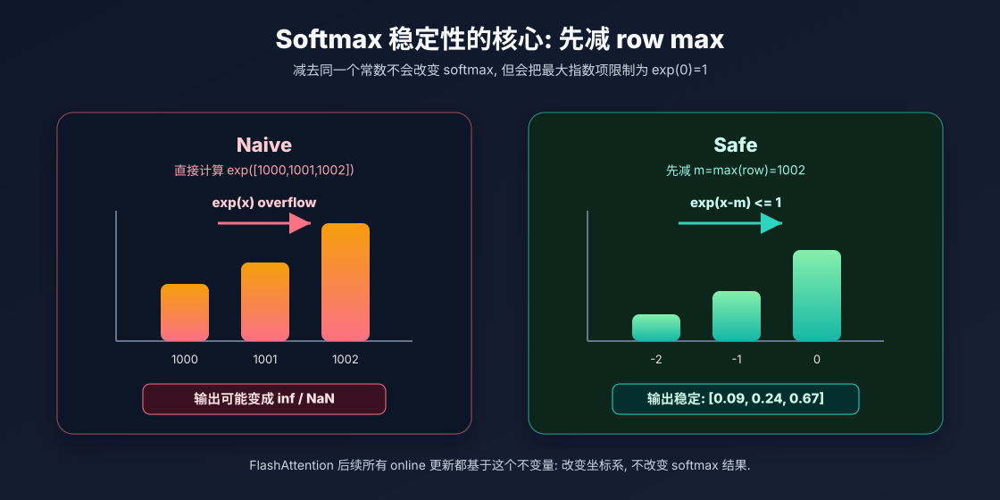
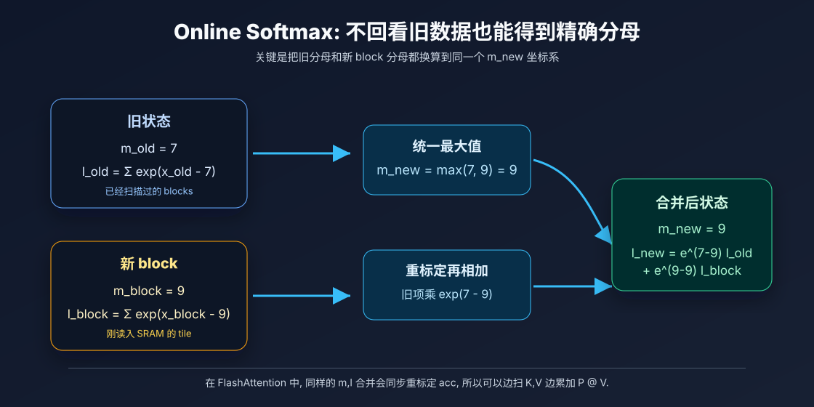
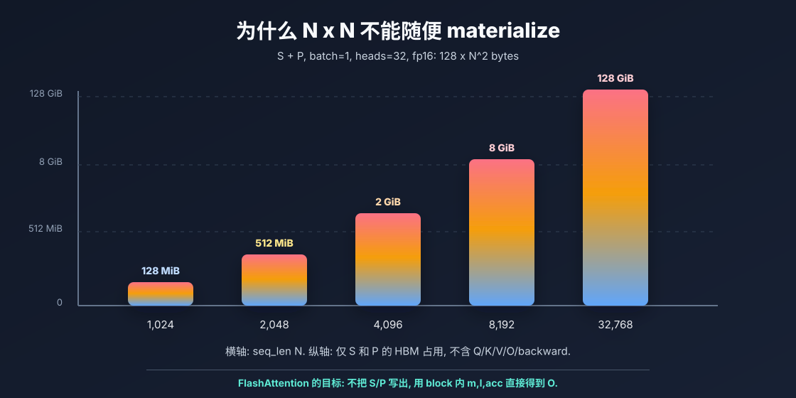
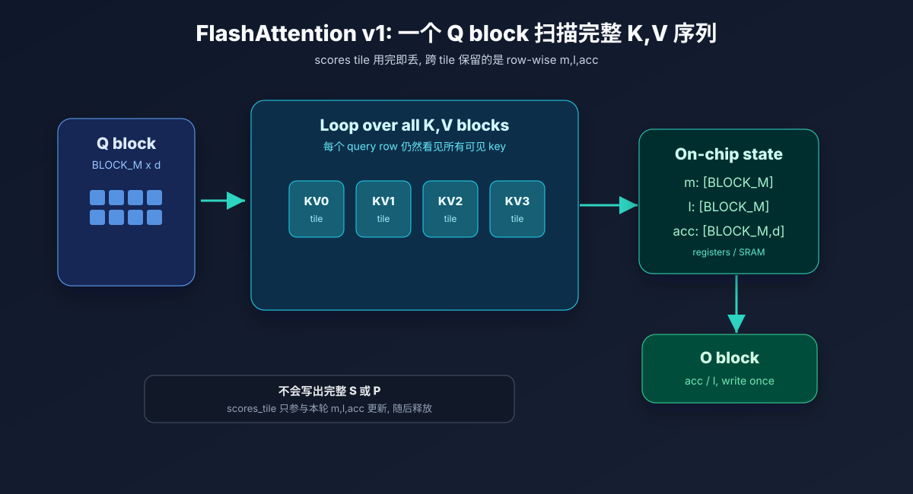
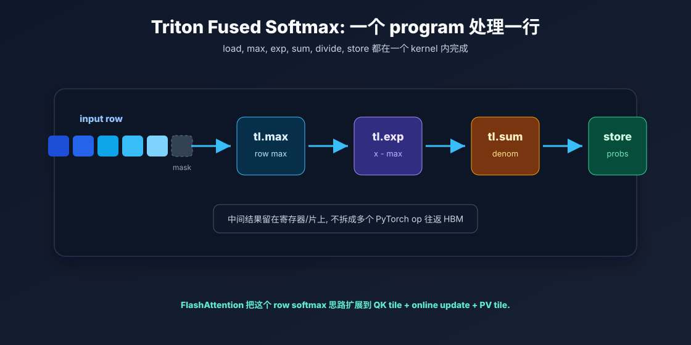
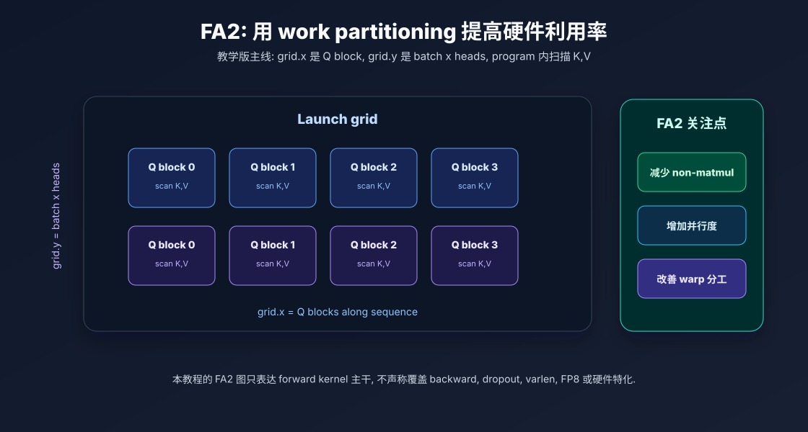

Mental Model
先抓住一条主线: HBM 少写, 片上多算
普通 attention 会显式写出 S = QKᵀ 和 P = softmax(S), 两者都是 N×N。FlashAttention 不改数学定义, 只改执行顺序: 每个 Q block 扫描所有 K,V block, 在寄存器或 SRAM 中维护 m, l, acc, 最后只把 O block 写回 HBM。

01. Softmax — 从 Naive 到 Safe
理解数值稳定性：为什么要减去 row max
Softmax 定义
问题：当 x 很大时，exp(1000) 会溢出；x 很小时会下溢为 0。
在 attention 里, 这里的 x 通常是一整行 score: 一个 query 与所有 key 的点积结果。softmax 的输出必须仍然是一行概率, 也就是非负且求和为 1。数值稳定性问题一旦出现, 后面的 P·V 会直接变成 NaN 或完全错误的输出。
不稳定的根源
exp 对输入大小极端敏感。logit 只差 1, 指数空间里就差 e 倍; logit 达到几百或上千时, fp16/fp32 都可能溢出。
减 max 的本质
所有元素同时减去同一个常数, softmax 结果不变。选择 m=max(x) 后, 最大指数项变成 exp(0)=1, 其他项都不超过 1。
对后续的意义
FlashAttention 每个 tile 都会遇到局部 max。只要能把不同 tile 的 max 和分母重新对齐, 就能不保存整行 scores。

Safe Softmax 公式
为什么数学结果不变
令 c 是任意常数, 则 softmax(xᵢ - c) 与 softmax(xᵢ) 相同, 因为分子和分母都多了同一个因子 exp(-c)。safe softmax 只是把 c 选成 max(x), 让每个 xᵢ - c ≤ 0。
本节 Kernel 对比
// Naive — 会溢出 numerator = tl.exp(row) denom = tl.sum(numerator) output = numerator / denom // Safe — 先减 row max row_max = tl.max(row) numerator = tl.exp(row - row_max) denom = tl.sum(numerator) output = numerator / denom
probs[row,:] = softmax(scores[row,:])。后续 FlashAttention 只是避免把完整 scores/probs 写到 HBM。
02. Online Softmax — 分块 Streaming 更新
FlashAttention 的核心积木：用两个标量状态替代全局信息
Safe Softmax 的局限
需要先读完一整行才能知道 m = max(row) 和 l = Σ exp(x − m)。如果一行太长（如 seq_len=128K），无法一次放入 SRAM。
Online softmax 解决的不是近似问题, 而是“状态可合并”问题。每个 block 先用自己的局部最大值计算一个局部分母, 合并时再把旧分母和新分母都换算到同一个新最大值下。
分块合并公式

m_old 坐标系重标定到 m_new 坐标系, 新 block 同理。这样得到的 l_new 与一次性 safe softmax 的分母完全一致。两遍扫描策略
O = Σ softmax(scoreⱼ) · Vⱼ。所以 FlashAttention 保存的状态扩展到三个：(m, l, acc)，其中 acc 是 V 的加权累积。
从 (m,l) 到 (m,l,acc)
在 softmax 里, l 是归一化分母。在 attention 里, 输出还需要把每个概率乘上对应的 V 向量。所以 FlashAttention 同步维护一个未归一化累积量 acc。当新的 block 最大值变大时, 旧的 l 和旧的 acc 都要乘同一个重标定因子。
最后写出 O_block = acc / l。这一步才做归一化, 因此中间不需要把整张 P 写出来。
03. Attention Baseline — 显存灾难
看清楚为什么 materialize N×N 矩阵不可行
标准 Scaled Dot-Product Attention
这里真正危险的是 S 和 P。它们的最后两个维度都是 N×N, 而 Q/K/V/O 只和 N×d 成正比。当 N 变大时, 中间矩阵会比输入输出张量快得多地膨胀。

S + P 的显存开销已经随 N² 增长。生产训练还要考虑 backward 保存项、dropout mask、optimizer state 和 activation checkpointing 策略。S + P 显存爆炸
| seq_len N | S + P (fp16) | 说明 |
|---|---|---|
| 1,024 | 128 MiB | 尚可接受 |
| 2,048 | 512 MiB | 开始吃力 |
| 4,096 | 2 GiB | 单层已很大 |
| 8,192 | 8 GiB | 加上 Q/K/V/O 就爆了 |
| 32,768 | 128 GiB | A100 80G 直接 OOM |
计算方式：batch=1, heads=32, N×N×2 tensors×2 bytes = 128N² bytes
Baseline 的 3 个 Triton Kernel
// Step 1: QKᵀ → 写出完整 S [N×N] _scores_kernel(q, k, scores_ptr) // Step 2: softmax(row) → 写出完整 P [N×N] _row_softmax_kernel(scores_ptr, probs_ptr) // Step 3: P·V → 写出 O [N×d] _pv_kernel(probs_ptr, v, out_ptr)
这三个 kernel 分开写的教学价值在于: 它把 HBM 边界暴露出来。第一步写 S, 第二步读 S 写 P, 第三步读 P 和 V 写 O。矩阵乘本身不是唯一成本, 大矩阵在 HBM 与计算单元之间来回搬运同样昂贵。
FLOPs 没有消失
FlashAttention 仍然需要计算可见的 QKᵀ 分数和 PV 乘法。它省的是中间矩阵落盘式的 HBM 流量。
Exactness 来自重排
只要每个 query row 最终看到了所有允许的 key, 并且 online softmax 合并正确, 输出就和 baseline 等价。
训练更复杂
这里讲的是 forward 主线。生产实现还要处理 backward、dropout、mask、varlen 和更多 dtype。
04. FlashAttention v1 — IO-Aware Tiling
不改变数学结果，改变执行顺序
BLOCK_M × d
Softmax
State
Blocks
loop over all
write once
核心算法
一个 Q block 的状态长什么样
FlashAttention 的状态不是一个全局标量, 而是“每个 query row 一份”。如果 Q_block 有 BLOCK_M 行, 那么 m 和 l 的形状是 [BLOCK_M], acc 的形状是 [BLOCK_M, head_dim]。每扫一个 K,V block, 这些状态就更新一次。

m, l 和 acc。关键对比
| Baseline | FA v1 | |
|---|---|---|
| S 矩阵 | 写入 HBM (N×N) | 不写入 |
| P 矩阵 | 写入 HBM (N×N) | 不写入 |
| O 矩阵 | 写入 N×d | 写入 N×d |
| HBM 读写 | O(N²) | O(N) |
| 数学结果 | 精确 | 精确（完全相同） |
正确性不变量
教学实现里最容易写错的是让第 i 个 Q block 只看第 i 个 K,V block。那会变成局部 attention, 不是标准 attention。标准全注意力要求每个 query row attend 到所有可见 key。FlashAttention 的每个 Q block 也必须循环扫描完整 K,V 序列, 只是把每个 tile 的 scores 用完即丢。
05. Triton Fused Softmax
把一行 softmax 映射到一个 Triton program
Triton 编程模型映射
| 概念 | Triton 对应 |
|---|---|
| 一个 program | 一行 row |
| tl.arange | 该行的列索引 |
| tl.load | 读入一行 |
| tl.max | 行最大值 |
| tl.exp | 分子 |
| tl.sum | 分母 |
| tl.store | 写出结果 |
Triton 的一个 program 更像“一个 tile 的 SIMD 小程序”, 不是 Python 循环里的一次标量操作。这里把一整行读入向量寄存器, 在同一个 kernel 内完成 max、exp、sum、divide, 最后再写回一整行。

QK matmul tile + row softmax update + PV matmul tile。看懂 Triton 的 row program 再看 FlashAttention 的 Q block program 会容易很多。
mask 是边界条件
当行长度不是 block size 的整数倍时, tl.load 需要 mask, 越界位置通常填 -inf, 避免参与 softmax。
BLOCK_SIZE 的取舍
block 太小会增加 program 数量和循环开销; block 太大又会占用更多寄存器和 SRAM。实际实现通常配合 autotune。
FlashAttention 的升级
row softmax 只处理一行输入。FlashAttention 把输入换成 Q_block @ K_blockᵀ, 并把概率立刻乘 V_block。
从 fused softmax 到 fused attention
普通 fused softmax 的融合边界是 max → exp → sum → divide。FlashAttention 的融合边界更大: 在同一个 kernel 内完成 QKᵀ tile、online softmax 更新和 P·V tile。这样 P 不再是一个需要存储的张量, 而是一个马上被消费掉的临时 tile。
06. FlashAttention-2 — Work Partitioning 优化
在 FA v1 基础上优化并行度和 warp 分工
FA2 改进的三个维度
FA2 Launch Grid
这里的 FA2 是教学视角
本仓库的 06_flash_attention_v2.py 保留 forward-only、固定 shape、无 dropout、无 backward 的教学约束。它的价值是把 FA2 关注的 work partitioning、launch grid 和 online 状态更新串起来, 而不是复刻生产库里的全部调度、autotune 和硬件特化。

FA v1 vs FA2 核心差异
| 维度 | FA v1 主线 | FA2 优化方向 |
|---|---|---|
| 核心目标 | 通过 tiling 避免写出 S/P | 在保持 IO 优势的同时进一步接近 GEMM 效率 |
| non-matmul 开销 | online softmax 的 max/sum/rescale 占比偏高 | 减少 rescale 和额外标量操作占比 |
| 并行度 | 主要依赖 batch×heads 和 Q blocks | 在 batch×heads 小时继续拆分序列维度以增加 thread blocks |
| warp 分工 | block 内通信可能带来 shared memory 往返 | 改进 warp work partitioning, 减少不必要通信 |
| 本仓库脚本 | 04_flash_attention_v1.py 展示 exact online attention | 06_flash_attention_v2.py 展示 FA2 风格 forward 主干 |
读代码时看哪些变量
把 pid_m 理解为当前 Q block 的序号, pid_bh 理解为当前 batch-head 平面的序号。offs_m 选出 Q 的行, kv_offsets 在循环里选出当前 K,V block。每轮循环里 scores 是临时 tile, row_max, row_sum, acc 是跨 tile 保留的状态。